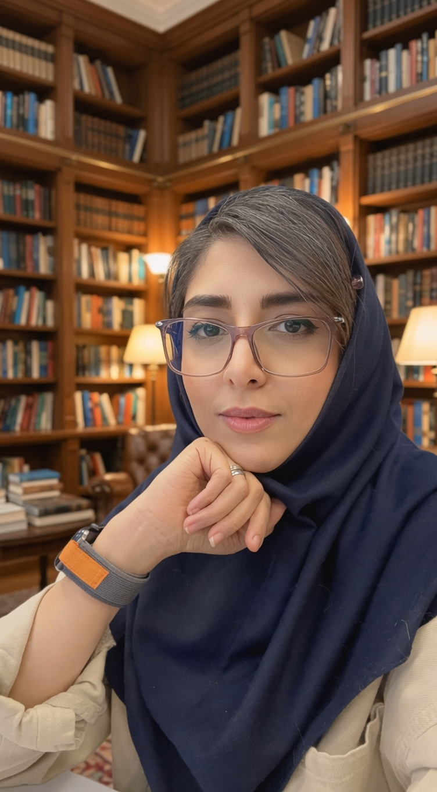
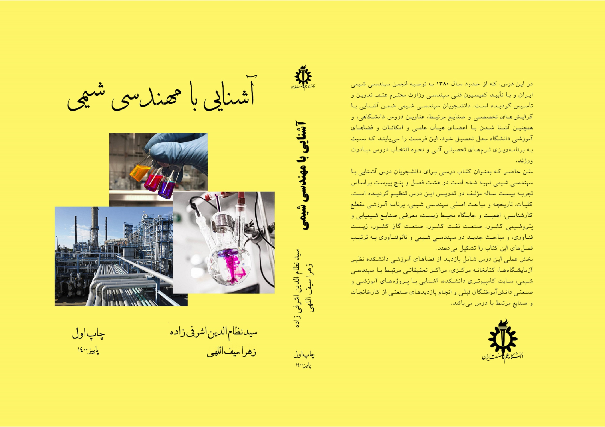
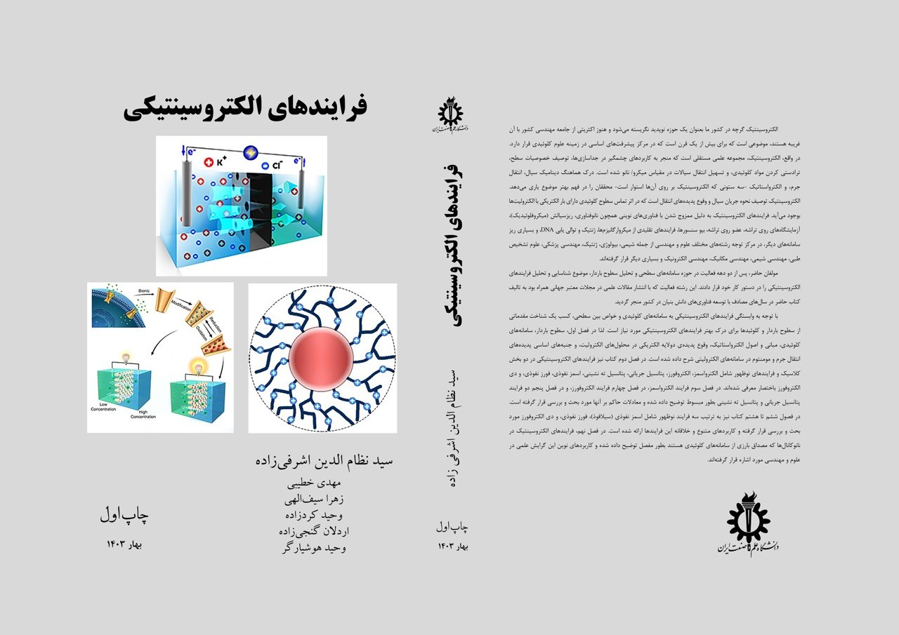

زهرا سیفاللهی هستم
کارشناس ارشد فرآیند | دکترای مهندسی شیمی
من زهرا سیف اللهی هستم، فارغ التحصیل دکتری مهندسی شیمی از دانشگاه علم و صنعت ایران. فردی مسئولیت پذیر، منظم و پیگیر هستم و تلاش می کنم کارها را با دقت، کیفیت بالا و تا رسیدن به نتیجه نهایی دنبال کنم. به یادگیری، حل مسئله و کار تیمی علاقه مندم و در محیط های کاری همواره سعی می کنم ارتباط حرفه ای، احترام متقابل و همکاری سازنده را حفظ کنم. از نظر تخصصی، تجربه فعالیت در حوزه مهندسی فرآیند، تحقیق و توسعه و پروژه های صنعتی در زمینه نفت و گاز، مواد پیشرفته و فرایندهای جداسازی را دارم. با نرم افزارهای تخصصی مهندسی شیمی و شبیه سازی فرآیند، کار پژوهشی، نگارش مقالات علمی و تألیف کتاب های تخصصی آشنا هستم و علاقه مندم دانش و توانم را در مسیر توسعه فناوری های نو و بهبود فرآیندهای صنعتی و زیست محیطی به کار بگیرم.
سوابق شغلی
مجموع ۶ سال سابقه کاری تخصصی
کارشناس ارشد فرایند
تیر ۱۴۰۴ تا کنون (۱ سال و نیم)انرژی پاک آرویج (هیربد نیرو) - تهران
- مشارکت در طراحی و شبیه سازی فرآیندهای اصلی نیروگاه در تیم مهندسی
- تهیه و تدوین مدارک بنیادین فرآیندی شامل HMB و BFD، PFD
- طراحی و تهیه P&ID مطابق با استانداردهای مهندسی و نیازهای عملیاتی پروژه
- تهیه دیتاشیت تجهیزات فرآیندی و تعامل با تیم های مکانیک، برق و ابزار دقیق
- انجام محاسبات فرآیندی، تحلیل عملکرد واحدها و پیشنهاد راهکارهای بهینه سازی
- همکاری در بررسی فنی تجهیزات و انتخاب صحیح بر اساس مشخصات فرآیندی
- مستندسازی کامل مدارک مهندسی و ارائه گزارش های فنی جهت تصمیم گیری های پروژه
- مشارکت در جلسات هماهنگی و ارائه ورودی های تخصصی برای پیشبرد فاز مهندسی
- مشارکت در طراحی و تحلیل فرآیند حذف گاز ترش از آب در واحدهای فرآیندی پروژه ایلام
- تهیه و تکمیل مدارک مهندسی شامل P&ID، مدارک دیتاشیت های فرایندی و سایر موارد
- همکاری نزدیک با تیم های بین رشته ای برای یکپارچه سازی طراحی و رفع چالش های فرآیندی
- انجام محاسبات فرآیندی، برآورد پارامترهای عملیاتی و بررسی کارایی
- اطمینان از تطابق طراحی ها با استانداردها
- ارائه گزارش های فنی و تحلیل های مهندسی
کارشناس فرآیند
فروردین ۱۴۰۳ تا خرداد ۱۴۰۴ (۱ سال و ۲ ماه)انرژی طراحان همراه (هیربد نیرو) - تهران
- تهیه مدارک مهندسی پروژه 3s
- طراحی جداساز میعانات گازی از گاز
- سایر موارد محرمانه می باشد.
مشاور تحقیق و توسعه
فروردین ۱۳۹۹ تا فروردین ۱۴۰۲ (۳ سال)ستاد ویژه توسعه فناوری نانو - تهران
- پروژه ساخت ورق های پلیمری زخم پوش
- پروژه سنتز و بهینه سازی فروفلوئید
کمک مدرس درس آشنایی با مهندسی شیمی
مهر ۱۳۹۸ تا آذر ۱۴۰۱ (۳ سال و ۲ ماه)دانشگاه علم و صنعت ایران - تهران
کمک مدرس - درس طرح و اقتصاد کارخانه
مهر ۱۳۹۹ تا مهر ۱۴۰۱ (۲ سال)دانشگاه علم و صنعت ایران - تهران
پژوهشگر
مهر ۱۳۹۹ تا شهریور ۱۴۰۰ (۱۱ ماه)مرکز صنعتی سازی نانوفناوری کاربردی - تهران (بدون بیمه)
پژوهشگر
مهر ۱۳۹۸ تا شهریور ۱۳۹۹ (۱۱ ماه)چهارمین طرح شهید احمدی روشن بنیاد ملی نخبگان - تهران (بدون بیمه)
کاراموز
تیر ۱۳۹۱ تا مرداد ۱۳۹۱ (۱ ماه)اداره گاز استان اردبیل - ایران تهران
سوابق تحصیلی
دکترا - مهندسی شیمی
دانشگاه علم و صنعت ایران
معدل: ۱۸.۴۳
کارشناسی ارشد - مهندسی شیمی
دانشگاه علم و صنعت ایران
معدل: ۱۸.۲۴
کارشناسی - مهندسی شیمی
دانشگاه محقق اردبیلی
معدل: ۱۶.۲۷
جوایز و افتخارات
مهارتها، نرمافزارها و زبانها
نرمافزارها
زبانهای خارجی
مهارتهای تکمیلی
تسلط بر تهیه مدارک مهندسی (BFD, PFD, HMB)
دقت بالا در انجام محاسبات و مستندسازی
تالیف و نشر کتاب های تخصصی
توانایی تحلیل پروژه و ارائه راهکارهای بهینه سازی
روحیه همکاری و کار تیمی مؤثر
توانایی طراحی و بهینه سازی فرآیندهای صنعتی
آشنایی با روش های تحقیق و توسعه (R&D)
آشنایی با تهیه دیتاشیت تجهیزات فرآیندی
مهارت در طراحی و تدوین P&ID
مسئولیت پذیری و پایبندی به تعهدات
توانایی انتخاب و ارزیابی فنی تجهیزات
تحلیل عملکرد واحدهای فرآیندی
انجام محاسبات فرآیندی (پیشرفته)
توانایی نگارش گزارش های فنی و تحلیلی
تجربه کار در تیم های بین رشته ای
تسلط بر نرم افزار Aspen HYSYS
آشنایی با استانداردهای صنعتی HSE
مهارت در تدوین مستندات مهندسی پروژه
مدیریت زمان و اولویت بندی وظایف
توانایی پژوهش، تحلیل داده و نگارش مقالات علمی
توانایی یادگیری سریع و حل مسئله
مسلط به امور آزمایشگاهی، آشنایی با فرایندهای غشایی، سامانه های میکروفلوئیدیک، سنتز مواد، استخراج و جذب
تحقیق کاربردی و بنیادی از سطح مولکولی تا سطح صنعتی
انجام آزمایش ها و نظارت بر عملکرد فرآیندها در روند تولید
دورههای آموزشی
کتب، مقالات و پروژههای آکادمیک
کتب تالیف شده

آشنایی با مهندسی شیمی
انتشارات دانشگاه علم و صنعت ایران (۱۴۰۰)

فرایندهای الکتروسینتیک
انتشارات دانشگاه علم و صنعت ایران (۱۴۰۲)
طرح و اقتصاد کارخانه
انتشارات دانشگاه علم و صنعت ایران
Recent Advances in Nanobiotechnology: From laboratory to patient care
(۱۴۰۲ - در دست داوری)
مقالات علمی
- ۱۳۹۶: Diclofenac extraction from aqueous solution by an emulsion liquid membrane: parameter study and optimization using the response surface Methodology
- ۱۳۹۷: Performance of amoxicillin extraction from aqueous solution by emulsion liquid membrane using response surface methodology
- ۱۳۹۸: Electrophoresis of spherical soft particles in electrolyte solutions: A review
- ۱۳۹۹: Application of solvent extraction for the removal of amoxicillin drug residues in environmental waters
- ۱۳۹۹: Experimental work on decontamination of wastewaters containing organic dye by liquid phase micro extraction method
- ۱۳۹۹: Corona Virus Echoes of Earth Grumbling: A Review
- ۱۳۹۹: Intensified decontamination amoxicillin drug wastewater assisted by liquid phase micro extraction method
- ۱۴۰۰: Impacts of the Shape of Soft Nanochannels on their Ion Selectivity and Current Rectification
- ۱۴۰۰: Trends in Biotechnology and Ties with Chemical Engineering
- ۱۴۰۰: Transition of chemical engineering from macro to micro/nano scales
- ۱۴۰۱: Ionic-Size Dependent Electroosmotic Flow in Ion-Selective Biomimetic Nanochannels
- ۱۴۰۱: Effect of charge density distribution of polyelectrolyte layer on electroosmotic flow and ion selectivity in a conical soft nanochannel
- ۱۴۰۲: Electrokinetics and Electrochemistry; Differences, Overlaps and Applications in Chemical Engineering
- ۱۴۰۳: Ionic transport behavior of soft nanochannels for Newtonian and non-Newtonian electrolytes
پروژهها و تجربیات آکادمیک
- ۱۴۰۱: رساله دکتری: مدلسازی جریان الکترواسمزی در ریزکانال های یون انتخابگر
- ۱۳۹۹: پروژه: سنتز و بهینه سازی فروفلوئید
- ۱۳۹۸: عضویت در طرح شهید احمدی روشن بنیاد ملی نخبگان، بررسی روش های تولید انبوه سرامیک شفاف آلومینیوم اکسی نیترید (آلون)
- ۱۳۹۸: بررسی روش های تولید انبوه سرامیک شفاف آلومینیوم اکسی نیترید (آلون)
- ۱۳۹۷: بررسی پدیده های فورتیکی در میکروکانال ها
- ۱۳۹۵: پروژه کارشناسی ارشد: بررسی جداسازی دارو از محیط ماع با استفاده از غشا ماع امولسیونی
- ۱۳۹۱: پروژه کارشناسی: بررسی رفتار هیدرودینامیک سیال روی عملکرد راکتور بستر ثابت
آماده فرصتهای شغلی جدید هستم
روز رسانی رزومه: ۲۲ تیر ۱۴۰۵
میزان سابقه کاری: ۶ سال
وضعیت تاهل: متاهل | ۳۸ سال سن
محل سکونت: استان تهران، شهر تهران، کارگر